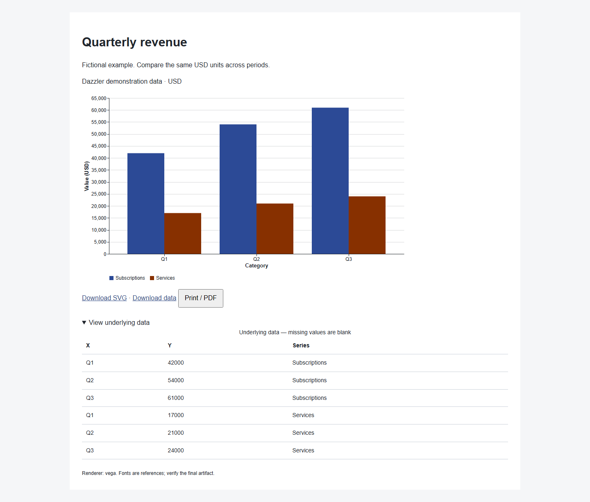
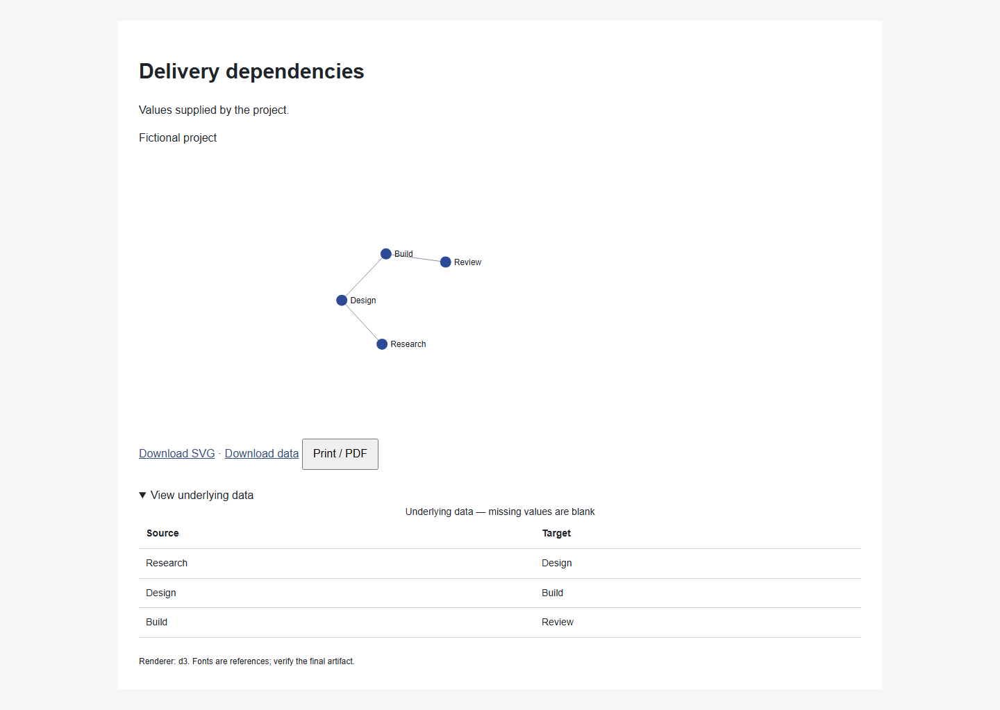
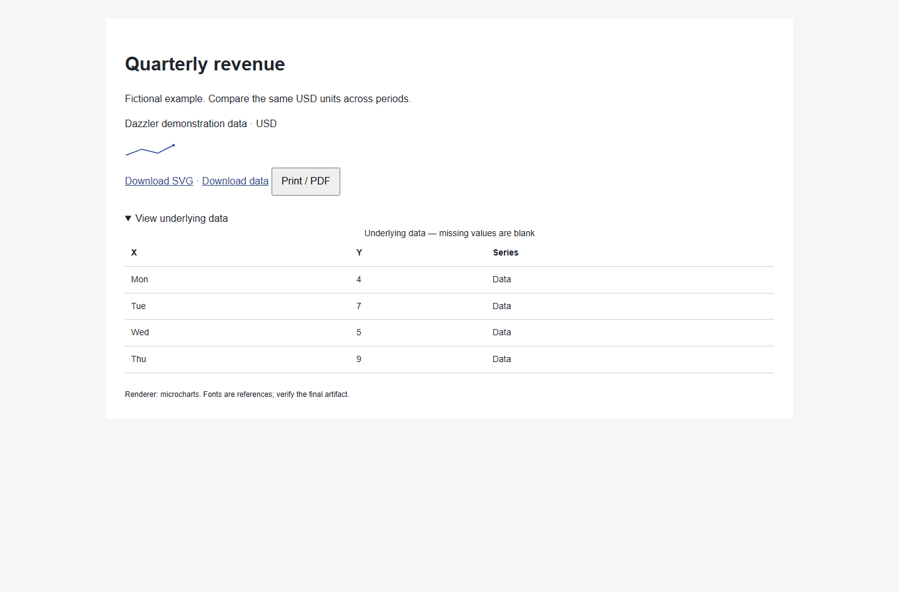

Dazzler field guideVISUALIZATION ADAPTERS / v0.11.1
Data, made visible.
Three actual rendered examples, using fictional data. Dazzler chooses a renderer from the purpose and existing stack. Each example includes its source table and download links.

Vega-Lite + Vega
Standard charts with measured series colors, responsive rendering and source data.
Open chart
Selected D3
Custom network, hierarchy and geographic layouts with an accompanying data equivalent.
Open network
Microcharts
A real server-rendered sparkline and a reusable React component for compact interface contexts.
Open compact trend